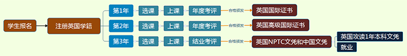

-
1、学校咨询
可电话咨询CEBVEC中心获得信息资料，也可以申请实地考察CEBVEC中心在英国的院校和机构。
-
2、签订合同
贵校确定共建中英国际学院后， CEBVEC中心、尼思港塔尔博特学院与贵校签订三方合同。
-
3、学校注册
贵校可在CEBVEC中心系统内完成注册，可获得英国教育系统认可，通过英方培训中国教师，在本校内直接向其学生授课，使学生获得国际职业资格证书和国际学历的教育证书。
合作院校可以展示NPTC及CEBVEC的铭牌，并可在所有媒体和宣传中使用上述标志。
-
4、资质评估与专业共建
学校加入CEBVEC中心后，安排英国专家团队至贵校对相关专业进行评估，评估内容包括专业的课程设置、竞争力、教学方法、评估考核体系等。通过与贵校沟通，最终设计出专业改进方案，并将评估结果以报告的形式提交贵校。
-
5、教师培训
英方培训中方教师，合格后可获得CPGE国际证书，最终形成熟悉中英两国教育体系，与国际接轨并具有国际竞争力的教师团队。
a.循证教学法：是目前英国职业教育最主流教学方法，循证实践（Evidence-Based Practise），亦为循证学。强调以“证据为基础的实践”，引申为“遵循证据进行实践”，是实践者针对“消费者”的具体问题，在“消费者”的主动配合下，根据研究者提供的最佳证据及管理者制定的实践指南和标准等所进行的实践。具体说来，循证实践是一个涉及研究者、实践者、实践对象与有关管理者四个方面的理论体系（具体教学方法可以通过中英职教卓越中心北京总部咨询英国NPTC教育专家）。
b.微格教学法：又称微型教学，它以现代教育理论为基础，利用先进的媒体信息技术，依据反馈原理和教学评价理论，分阶段系统培训教师教学技能的活动。微格教学法实际上是提供一个练习环境，使日常复杂的课堂教学得以精简，并能使联系者获得大量的反馈意见，微格教学实践一般控制在5-10分钟，在这几分钟内要求教师或者师范生将平时40分课堂内容能在这几分钟内完整呈现并且使得学生听懂、理解（具体教学方法可以通过中英职教卓越中心北京总部咨询英国NPTC教育专家）。
-
6、课程体系设计
英方培训中方教师后，会指导中方教师对相关专业下的课程体系进行设计，制定出符合中国学生适合的课程，并根据不同类型的学生来制定特定的教学方法。中方借鉴英国的教学理念，参考国外课程设计经验，不完全照搬国外教材，由英方指导，对教材、讲义进行本土化改良。
-
7、基础设施建议
英方根据已取得的办学经验，为中方院校提供教室及实验室基础设施、装修装饰、实验设备、教学电子设备、桌椅形式等建议，供中方参考。
-
8、颁发证明文件
CEBVEC将向专业改进的院校颁发带有日期及课程名称的证明文件，以证明该校的相关专业课程达到英国标准。
-
9、招生
按照学校计划及专业建设方案，学校招生开班，CEBVEC中心会配合学校做招生宣传，并印刷招生宣传册，积极组织招生宣传主题活动，并参加学校开展的各类招生宣讲活动。
-
10、学生注册入学
学员在CEBVEC系统注册学籍，成为中英国际学院学生。
 -
11、年度考核审查
中英国际学院专业班学员的学业考核方法，依据CEBVEC提供专业改进方案中的考核方案执行，由贵校教师和学生共同完成学生学习证据的收集和记录工作，英方专家会同中方相关老师，对学员的学习成果进行评估和反馈。
a. 教师证书：
教师经过培训1年，获得CPGE教师培训证书。
b. 学生证书：
第一学年：（第一阶段）国际证书；
第二学年：（第二阶段）高级国际证书；
第三学年：英国尼思港塔尔博特学院文凭和中国高职院校双文凭。